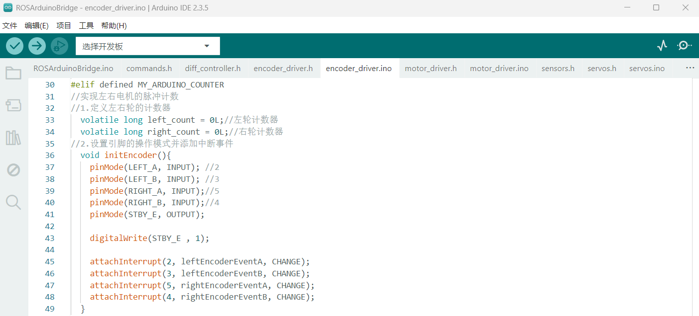
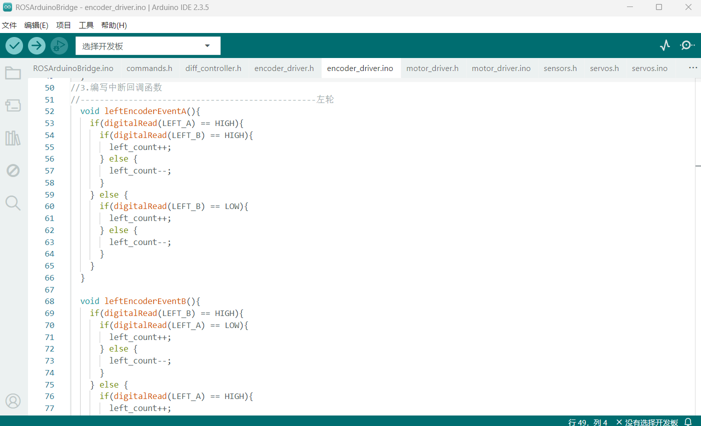
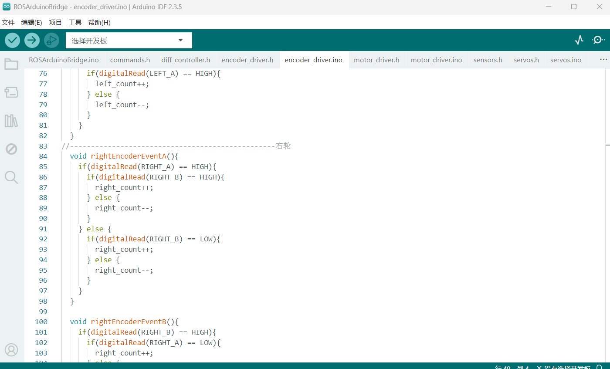
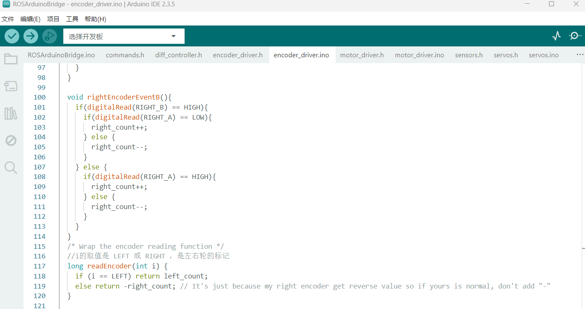

Arduino部分的工作
应该是要事先了解一下Arduino的使用以及代码中的常用基础函数，但是这里仅说明主要步骤，不做其他扩展
代码中有不懂的地方直接复制问AI即可
该部分代码资料位于
{kind=link}
1. 程序入口部分
ros_arduino_bridge/ros_arduino_firmware/src/libraries/ROSArduinoBridge
下的 RosArduinoBridge.ino 是Arduino端程序的主入口
{kind=link}
源码默认禁用基座控制器，启用舵机，需要修改启用基座控制器，禁用舵机（本方案目前不使用舵机）
修改部分:
开启基座控制器:
{kind=link}
禁用舵机:
{kind=link}
1.1 指令集
由于后续调试需要对Arduino发送指令查看情况，Arduino所能接收的上位机指令为以下内容:
{kind=link}
1.2 硬件接线
接线方式如图
{kind=link}
{kind=link}
其中TB6612的STBY可以直接接在5V上，即默认使能电机，不通过程序控制电机
2. 添加自定义编码器驱动
在RosArduinoBridge.ino中增加自定义的编码器驱动
{kind=link}
2.1 编码器头文件
在encoder_driver.h中添加如下部分的代码
#elif defined MY_ARDUINO_COUNTER
//定义引脚
#define LEFT_A 21 //E2A---中断口2
#define LEFT_B 20 //E2B---中断口3
#define RIGHT_A 18 //E1A---中断口5
#define RIGHT_B 19 //E1B---中断口4
#define STBY_E 8//STBY
//声明函数
//1.设置引脚操作模式并添加中断
void initEncoder();
//2.为中断引脚添加中断事件
void leftEncoderEventA();
void leftEncoderEventB();
void rightEncoderEventA();
void rightEncoderEventB();
{kind=link}
2.2 修改编码器源代码
在encoder_driver.ino中添加如下部分代码（建议直接查看我的文件）
#elif defined MY_ARDUINO_COUNTER
//实现左右电机的脉冲计数
//1.定义左右轮的计数器
volatile long left_count = 0L;//左轮计数器
volatile long right_count = 0L;//右轮计数器
//2.设置引脚的操作模式并添加中断事件
void initEncoder(){
pinMode(LEFT_A, INPUT); //2
pinMode(LEFT_B, INPUT); //3
pinMode(RIGHT_A, INPUT);//5
pinMode(RIGHT_B, INPUT);//4
pinMode(STBY_E, OUTPUT);
digitalWrite(STBY_E , 1);
attachInterrupt(2, leftEncoderEventA, CHANGE);
attachInterrupt(3, leftEncoderEventB, CHANGE);
attachInterrupt(5, rightEncoderEventA, CHANGE);
attachInterrupt(4, rightEncoderEventB, CHANGE);
}
//3.编写中断回调函数
//-------------------------------------------------左轮
void leftEncoderEventA(){
if(digitalRead(LEFT_A) == HIGH){
if(digitalRead(LEFT_B) == HIGH){
left_count--;
} else {
left_count++;
}
} else {
if(digitalRead(LEFT_B) == LOW){
left_count--;
} else {
left_count++;
}
}
}
void leftEncoderEventB(){
if(digitalRead(LEFT_B) == HIGH){
if(digitalRead(LEFT_A) == LOW){
left_count--;
} else {
left_count++;
}
} else {
if(digitalRead(LEFT_A) == HIGH){
left_count--;
} else {
left_count++;
}
}
}
//-------------------------------------------------右轮
void rightEncoderEventA(){
if(digitalRead(RIGHT_A) == HIGH){
if(digitalRead(RIGHT_B) == HIGH){
right_count--;
} else {
right_count++;
}
} else {
if(digitalRead(RIGHT_B) == LOW){
right_count--;
} else {
right_count++;
}
}
}
void rightEncoderEventB(){
if(digitalRead(RIGHT_B) == HIGH){
if(digitalRead(RIGHT_A) == LOW){
right_count--;
} else {
right_count++;
}
} else {
if(digitalRead(RIGHT_A) == HIGH){
right_count--;
} else {
right_count++;
}
}
}
/* Wrap the encoder reading function */
//i的取值是 LEFT 或 RIGHT ，是左右轮的标记
long readEncoder(int i) {
if (i == LEFT) return left_count;
else return -right_count; // It's just because my right encoder get reverse value so if yours is normal, don't add "-"
}
   
{kind=link}
{kind=link}
{kind=link}
{kind=link}
return -right_count是因为我使用的是差速轮，如果以左轮为准的话，向前走时右轮编码器和左轮相反
2.3 编码器计数验证
要验证最好搭建实体组装完成，如果没有搭建好可以先接好电机和编码器使用
以上代码编写完成后，可按以下步骤验证编码器代码正确性
- 先编译 符号"✓"，再上传到开发板 符号"→"
{kind=link}
- 打开串口监视器，按照图中配置，输入"e"，如果正常则会返回左右轮的编码器计数，然后就可以转动轮子再输入指令"e"查看编码器计数情况
{kind=link}
编码器部分的程序是四倍频计数，因此若正转一圈则返回的值应该是4000左右，反转则为-4000左右，关于倍频计数的原理这里不进行过多解释
简单理解为AB相编码器主要构成为A相与B相，每一相每转过单位的角度就发出一个脉冲信号(一圈可以发出N个脉冲信号)，
A相、B相为相互延迟1/4周期的脉冲输出，根据延迟关系可以区别正反转，而且通过取A相、B相的上升和下降沿可以进行单频或2倍频或4倍频测速

3. 添加自定义电机驱动
3.1 修改电机驱动头文件
在motor_driver.h中添加如下代码
#elif defined TB6612_MOTOR_DRIVER
#define BIN1 5
#define BIN2 4
#define PWMB 10//左
#define AIN1 7
#define AIN2 6
#define PWMA 9//右
#define STBY 8
{kind=link}
3.2 修改电机驱动源文件
在motor_driver.ino中添加如下部分代码（建议直接查看我的文件）
#elif defined TB6612_MOTOR_DRIVER
//1.初始化函数
void initMotorController()
{
pinMode(BIN1 , OUTPUT);
pinMode(BIN2 , OUTPUT);
pinMode(PWMB , OUTPUT);
pinMode(AIN1 , OUTPUT);
pinMode(AIN2 , OUTPUT);
pinMode(PWMA , OUTPUT);
//pinMode(STBY , OUTPUT);
//使能电机
//digitalWrite(STBY , 1);
}
//2.设置单个电机转速
void setMotorSpeed(int i, int spd)
{
unsigned char reverse = 0;//定义反转变量
if (spd < 0)
{
spd = -spd;
reverse = 1;
}
if (spd > 255){
spd = 255;
}
if (i == LEFT) //左电机
{
if(reverse == 0)
{
//正转
digitalWrite(BIN1 , 0);
digitalWrite(BIN2 , 1);
analogWrite(PWMB,spd);
}
else if (reverse == 1)
{
//反转
digitalWrite(BIN1 , 1);
digitalWrite(BIN2 , 0);
analogWrite(PWMB,spd);
}
}
else//右电机
{
if(reverse == 0)
{
//正转
digitalWrite(AIN1 , 0);
digitalWrite(AIN2 , 1);
analogWrite(PWMA , spd);
}
else if (reverse == 1)
{
//反转
digitalWrite(AIN1 , 1);
digitalWrite(AIN2 , 0);
analogWrite(PWMA , spd);
}
}
}
//3.设置两个电机的转速
void setMotorSpeeds(int leftSpeed, int rightSpeed)
{
setMotorSpeed(LEFT, leftSpeed);
setMotorSpeed(RIGHT, rightSpeed);
}
{kind=link}
{kind=link}
{kind=link}
4. PID
4.1 调试PID
调试PID需要把当前的PWM值输出出来，PID部分的代码在diff_controller.h中
特别注意
添加输出代码，这是用于调试的输出调试完成后一定要记得注释或者删除
在
下一行添加串口输出代码
再次强调
添加输出代码，这是用于调试的输出调试完成后一定要记得注释或者删除
{kind=link}
4.2 增加调试间隔
为了方便调试时观察，增加调试时的时间
可以将这里的2000ms（2s）的间隔先注释掉使用自定义的调试间隔
{kind=link}
4.3 单独调试一侧轮子的PID
{kind=link}
- 可以注释掉一侧的PID调试，单独调试一边
- 需要注意的是，两个轮子各自使用一套PID应该能达到最好的效果，但是这里仅做学习两个轮子使用同一套PID，有需要可以仿照文件中PID的部分给另一侧单独写一套PID
可以先把D和I都给0，调P，P调好了以后再调D然后再调I
代码中的ko不用管
调试步骤:
- 更改参数值，上传到Arduino中
- 打开串口绘图仪
- 发送速度指令，速度给定的代码格式为“m 100 0”（意思为 左侧速度100 右侧速度0）
{kind=link}
{kind=link}
每一次更改参数值再次调试之前先输入“m 0 0”将电机速度重置